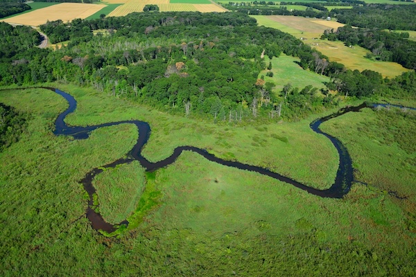

Starting with Team Science
Learning Objectives
After completing this module, you will be able to:
- Understand the power and benefits of synthesis
- Identify funding sources for supporting synthesis
- Have tools for establishing group norms and expectations
- Evaluate strategies for group organization and project management
Why Synthesis?
Define Synthesis
Scientific research can be defined as “creative and systematic work undertaken in order to increase the stock of knowledge” (2015 Frascati Manual). To this basic definition of research, our definition of synthesis research adds collaborative work, and the integration and analysis of a wide range of data sources.
This process–of bringing diverse expertise together to combine existing primary data–definitely has its challenges. Identifying and engaging the necessary combination of skills and experience is challenging. Scheduling meeting times can be difficult. Commitment to the process can be uneven. Nonetheless, virtually all who have experienced it find it to be a deeply rewarding experience. Why?

- The products emerging from synthesis typically have higher impact (as defined by both academic and applied measures)
- The process allows researchers to access and incorporate skills that they don’t (yet) have themselves.
- Working groups help early career researchers build their science networks.
- Keep experienced researchers fresh and engaging with new ideas
- Builds on existing investments of the science community by re-using data
- Offers a way to involve individuals who can’t or don’t want to do fieldwork in original research and expands opportunity to less research-intensive institutions.
Examples of Recent Synthesis Products
| Environmental drivers of plant reproduction: Community Synchrony in Seed Production is Associated with Trait Similarity and Climate Across North America. Ecology Letters, 2024. | |
|  | Metacommunity dynamics mediate community responses to disturbance: The dual nature of metacommunity variability, Oikos, 2021. |
| Soil organic matter: multi-scale observations, manipulations & models: Dataset: SoDaH: the SOils DAta Harmonization database, an open-source synthesis of soil data from research networks, version 1.0., EDI 2020 | |
| Population and Community Synchrony: The spatial synchrony of species richness and its implications for ecosystem stability. Ecology 2021. | |
 |
Global Patterns in Stream Energy and Nutrient Cycling: Shifting stoichiometry: Long-term trends in stream-dissolved organic matter reveal altered C:N ratios due to history of atmospheric acid deposition, Global Change Biology, 2022. |
| Controls on River Silica Exports (Combined data from more than 1000 watersheds on 6 continents.): Climate, Hydrology, and Nutrients Control the Seasonality of Si Concentrations in Rivers. JGR Biosciences 2024 | |
| Marine consumer nutrient dynamics: Dataset: Estimates of nitrogen and phosphorus excretion rates in individual marine and estuarine animals ver 1. EDI 2024. | |
| Fire and Aridland Streams: Persistent and lagged effects of fire on stream solutes linked to intermittent precipitation in arid lands. Biogeochemistry 2024 | |
| Ecological Metagenome- Derived Reference Genomes and Traits: From soil to sequence: filling the critical gap in genome-resolved metagenomics is essential to the future of soil microbial ecology, Environmental Microbiome, 2024 | |
| Global Synthesis of Multi-year Drought Effects (Integrated 100 grassland and shrubland sites across 6 continents): Extreme drought impacts have been underestimated in grasslands and shrublands globally. PNAS 2024. | |
| Integrating plant community and ecosystem responses to chronic global change drivers: Dataset: CoRRE Trait Data: A dataset of 17 categorical and continuous traits for 4079 grassland species worldwide, Scientific Data, 2024 | |
| Scaling-Up Productivity Responses to Changes in Biodiversity**: Biotic homogenization destabilizes ecosystem functioning by decreasing spatial asynchrony. Ecology 2021. |
Identifying a Synthesis-Ready Question
Lots of questions are interesting, but not terribly well-suited for a synthesis approach. We’ve learned through experience that there are a few qualities that make some questions a better fit for a) combining data; and b) work by a group. The main qualities that we seek in synthesis projects include:
- Novel and interesting enough to keep you engaged for 2-3 years.
- Data already exist and you know (at least generally) where to find it
- Questions cover a large geographic area or data that aren’t normally collected or analyzed together
- Clearly framed, but flexible enough to allow adaptation through the process
- Outputs could include several kinds of products. As the project progresses, grad students will become postdocs, postdocs will get faculty positions. For the project to remain satisfying to all participants, people will need to be able to take a leadership role on different kinds of products.
- Papers (including data papers, perspectives, gap analyses, as well as primary analyses)
- Symposia
- Datasets
- Analytical Packages
- Responsive to the funding call!
Process Overview
Typically, a group of researchers–or researchers and managers or community members–will plan a series of meetings over 2-3 years. The mix of in-person v. virtual meetings and work will vary across different groups and different funders, but the general pattern is similar.

Early meetings focus on narrowing the questions and deciding what data is needed and what analyses will be most useful. A period of data gathering and assembly comes next. The assembly of data almost always prompts a revision of the initial questions, as data rarely comes in exactly the form that researchers expected. This can be both the most frustrating and the most interesting part of the process as new hypotheses and models are floated and discussed. It is especially important to have the full participation of researchers familiar with different fields and ecosystems in this process.
With tractable questions refined, the group will move into analysis mode. Often, a few individuals will do most of the data wrangling and coding, but will need continuous input on analytical decisions. In our experience, GitHub issues is one very good tool for facilitating and recording these decisions. But the “best” tool will be the one that most members of the team are most comfortable with.
Later meetings will focus on developing manuscripts and/or application-related products such as white papers and decision support tools.
Often, early career researchers will be excited about the idea of synthesis but be unsure how to connect with existing or nascent synthesis efforts. Here are a few ideas for how to make yourself available and valuable to synthesis groups.:
- Make it known you want to be involved in synthesis
- Let your advisor know
- Share your enthusiasm
- Skill building:
- Synthesis Skills for Early Career Researchers: SSECR
- Data Carpentries
- ESIIL: innovation summit, hackathons
- Environmental Data Science Summit
- Build your community
- Ask questions at meetings
- Initiate conversations
- Start your own!
Sources of Support for Synthesis
While it is certainly possible to conduct synthesis with no external support, a bit of funding will allow your group to travel to meet up in person and can, in some cases, provide salary support for postdocs, grad students or or assistance with analysis.
What funding sources support synthesis work?
Sources of Funding and Support
Synthesis Centers
- Environmental Science Innovation and Inclusion Laboratory (ESIIL)
- National Center for Ecological Analysis and Synthesis (NCEAS)
- Morpho Program
- USGS Powell Center
- S-div
- Canadian Institute of Ecology and Evolution (CIEE)
Societies
- New Phytologist Workshops
- Gordon Research Conferences
- Chapman Conferences
- British Ecological Society
- one-third of participants from developing world
NSF Programs
- ULTRA-data Dear Colleague letter
- NSF Core Programs, e.g. Division of Environmental Biology, and others: search for “synthesis activities”, “synthesis projects”
- NSF workshops
Building a Team
Research from organizational development (Horowitz and Horowitz 2007, Agrawal and Wooley, 2018) and the science of team science (Cheruvelil et al. 2014) finds that teams combining members form multiple fields, identities, backgrounds, and functional styles are more creative and produce better results. There’s a big caveat, though. They only get those positive results when the team adopts a learning mindset and the collaboration process allows each participant to contribute in the way that works for them. (van Knippenberg and Hoever 2017)
Diverse Teams Yield:
- More creative and innovative approaches
- Avoiding ‘groupthink’
- Better cognitive elaboration; more complex thinking
- Checked assumptions
- Diversity broadens group scanning ability and consideration of alternative solutions
- Diverse groups achieve better task completion and more efficient use of resources
- Solutions generated by diverse groups have more legitimacy and salience
What are some types of difference you might seek out among group leaders and members?
The composition of the leadership team will affect the success of the project and who you will be able to recruit to the larger group. Look for:
- Different (and complementary) areas of expertise (ecologists, hydrologists, computer scientists, developmental biologists, engineers, etc.)
- Research approach (modelers, empiricists, humanists, community-engaged researchers)
- Complementary professional networks
- Facilitation and project management skills
- Emotional Intelligence
- Study system
In our experience at NCEAS and the LTER Network Office, we’ve found teams of up to 10 to 15 people to be optimal for synthesis work. As individuals, we all have strengths and weaknesses. The beauty of working in teams is that you can invite people who offset your own weaknesses and who bring strengths you don’t have. Often, you’ll have a few core team members who have generated a synthesis idea, but then you’ll want to take a clear-eyed look at what additional skills and qualities to invite. When you do so, be sure to consider:
- Skills, Aptitudes, and Communication Styles
- Look for a mix of empiricists, theorists, and modellers
- Big-picture thinkers, organizers, task-oriented do-ers
- Deep thinkers and risk-takers
- At least some skilled coders
- Career stage
- Senior investigators connect the team to existing literature and fields of study, connect to a broad network of experienced researchers, and have good knowledge of resources, but often have a very limited amount of time to devote to discussion and analyses.
- Junior team members often bring a fresh perspective, familiarity with newer literature, strong coding skills, and time to devote to the project.
- Emotional intelligence
- Research shows (Aggarwal and Woolley, 2018) that the bump in creativity seen in mixed-gender teams is typically due to an increase in emotional intelligence and attention to team dynamics. Include at least a few people with a process orientation and strong people skills.
- Power dynamics
- You won’t be able to anticipate all of the issues related to power dynamics that can arise, but keep them front of mind as you assemble a team.
- Remember that participation in synthesis represents a significant career opportunity.
- Be mindful that such career-building opportunities have not been fairly distributed.
- Be intentional about seeking out people who may not be part of your typical circles (including gender, ethnicity, career stage, family status, (dis)abilities, etc.).
Making a Communication and Work Plan
Once you’ve assembled a team, there are several steps you can take to elicit the best work out of the combination of people you’ve assembled. Starting as early as the invitation to join the team, encourage participants to think about (and communicate) what they have to contribute, what they hope to get out of participating, and to be clear about the level of commitment they can make.
Good teams are both chosen and made. Diversity on teams uncovers novel approaches, perspectives, and insights, but it can also slow the pace and reveal misunderstandings and unexamined assumptions. As a synthesis team leader (and even as a participant), there are many things you can do to create opportunities for everyone to contribute their best thinking, learn from one another, and feel heard and respected.
As the group gets started
- Create a shared vision for your group
- Make sure everyone starts on the same footing with a brief overview of the context for the group and the questions you’re starting with
- Co-develop group norms. It builds ownership of shared norms.
- Conduct a “pre-mortem” to talk about worries and visions for a healthy group dynamic
- Develop an authorship policy
- What contributions warrant authorship on a paper? Collecting data? Contributing data? Being part of a discussion that sparked the idea? Developing figures?
- But also, how do group members learn that a paper is being developed?
- Can all group members opt-in to any paper?
- Or is everyone an author until they opt out?
- Network and group authorship policies are more complex than tallying contributions to a single paper.
- Recognize who you are as a group, culturally, and any power dynamics that might entail
- Sometimes, simply articulating the potential for oppressive power dynamics can give group members the confidence to assert themselves
Throughout the process
- Get to know each other
- Use creative icebreakers to break a pattern of silence
- Invest in “social” time. It’s often when the best ideas surface.
- Value and accommodate various styles of contribution
- Fast and slow thinkers,
- Visual, auditory and kinesthetic learners,
- Synchronous and asynchronous contributions
- Practice “cultural norming” by educating participants on systemic and implicit biases and ways to counter them
At intervals
- When you find yourself questioning whether a practice or activity is still valuable, ask each member for a quick read on whether the group should “Start, Stop, or Continue” the activity
Establishing a Project Management Plan
As your group gets started working together, it it easy to assume that you will use the tools and planning strategies that the PI or project organizer is used to using. They will devote a lot of time to the project, so their preference will carry weight. But also try to survey the group at an early meeting so that you know which platforms other group members use. Make decisions based on balancing platforms that will allow maximum group participation with those that will make the work easiest for those likely to be doing the work.
Project Kickoff Guide from NCEAS. Find the series on the NCEAS website
Process Design for Meetings
Good meeting design starts with understanding your purpose and objectives, as well as your participants. Once you understand why you need to meet (your overarching goal) and what you want to accomplish (the specific outcomes you are driving toward), you can turn to how you will accomplish your purpose (i.e. the agenda of activities, timings, and tech) and who will play what roles. You want participants to know their role and how to be at their best and that often requires adequate time to prepare. Try to construct meeting agendas based on goals and be sure to share them with participants well ahead of the scheduled meeting time.

We all misjudge our availability once in a while, but consistently failing to deliver on commitments disrupts others’ work plans and is a major source of group dissatisfaction. Get buy-in for commitments and plan for both reminders and accountability.
Establish Group Norms
There are many approaches to establishing group norms, but a shared process that helps create ownership and buy-in is one key to a smoothly-functioning working group.
The process can be as simple as taking 15 minutes to ask the group about their shared (and diverging) values and what those imply about how the group should function. The best choice for your group will depend on the mix of participants, the nature of the content, and the duration of your collaboration.
Example processes for collaboratively setting group norms
From Biodiversity on a Changing Planet working group (PI: Peter Adler)
This version is simplest and most appropriate when your group has some shared history and mainly needs a reminder to attend to their share values. Even so, be sure to leave enough time and space for participants to add new ideas or concerns. Offer some basic starting point values and norms, then ask the group to add any that haven’t been raised yet. Record the results and return to them at the start of meetings.
Group Values
- Inclusion
- Creative Thinking
- Teamwork
- Accountability
- Fun
What else?
From Response Diversity Network Workshop
This version is a little more involved and directive with respect to behaviors as well as values. Edit, add, or delete suggestions depending on any concerns in your group.
Community Rules for Inclusive and Productive Discussions
- We are all responsible for cultivating a respectful and inclusive atmosphere to benefit from our diverse community of participants.
- Listen with curiosity and resilience, not judgement.
- Assume the best of intentions.
- Allow others to participate and avoid dominating the conversation.
- Accept/meet people where they are.
- Bring a spirit of generosity (for yourself and others).
- Be kind to yourself.
- Support learning.
- Be attentive to power and privilege.
- Enjoy yourself!
From Entering Mentoring (Center for Improvement of Mentored Research Experiences (CIMER))
For longer collaborations with more challenging power dynamics, it may be worth engaging in a slightly more involved process. In workshops run by the Center for Improved Mentoring of Experiences in Research (CIMER), a facilitator presents a set of group behaviors categorized as group-oriented or self-oriented.

Break onto small groups and discuss the following questions:
- What are some strategies to maximize group-oriented & minimize self-oriented behaviors?
- Are there special considerations for an online space? How can group dynamics be different in an online vs. face-to-face environment?
- How can we leverage our knowledge of group behaviors as we work together during this workshop?
The exercise presents an opportunity for self-reflection and for participants to commit to (and ask for help in) curbing their unhelpful behaviors. After all, we all have them!
Some Alternatives to Conventional Meeting Structures
Differences in thinking and learning styles, disciplinary background, power, and other dimensions of diversity mean that there’s no such thing as a one-size-fits-all approach for participatory processes. Nonetheless, we tend to default to a small set of traditional ways of sharing information and engaging people when we meet. These conventional structures are often either too limiting (presentations, status reports, and managed discussions) or too free-form and disorganized (open discussions and brainstorms) to effectively tap the wisdom of the group (Lipmanowicz and McCandless, 2014). To support the engagement of all participants, we need to break out of those traditional ways of meeting.
Books and websites like Liberating Structures, Gamestorming, and the Facilitator’s Guide to Participatory Decision Making offer dozens of alternative group processes (see Resources). Known as microstructures or knowledge games, these simple, fun activities are designed to include everyone, distribute control, and unleash creativity. One or more activities can be matched to your intended outcomes and arranged in a sequence to advance the team toward your overall goal. Liberating Structures offers a matching matrix to help you identify microstructures that could fit your needs and an app you can use to browse and assemble strings of activities. Gamestorming organizes their activities into categories (e.g. games for opening, games for decision-making) for exploration.
- Break into small groups of 3-4 people
- Each individual in the group chooses a different one of the microstructures in the table below and spends ~ 3 minutes reading it and thinking about what situations they have encountered that would have benefited from using it.
- Each group member summarizes how the structure works and what they found interesting or useful about it (5 min total)
Here are a few microstructures that work well for small group virtual meetings. They also work for larger groups and in person settings:
Tool Highlights: Microstructures
| Microstructure | Thinking Preference | Purpose | How It Works |
|---|---|---|---|
| Icebreaker / check in | Relational | Connect as a team, start on a positive, human note | Many versions exist, e.g., one word to describe how you are arriving; one thing you are feeling grateful for today; coolest thing you’ve learned lately; describe where you grew up without using any place names, etc. |
| Round robin / go around | Analytical, Relational | Hear from everyone | Everyone answers the same prompt. Alternatives to going in order: each speaker calls on the next person after they have shared - keeping track of who has / hasn’t spoken keeps people paying attention; popcorn-style - people share in the order that they feel moved to speak |
| 1,2,4,all | Analytical, Practical, Experimental, Relational | Engage everyone in generating questions, ideas, and suggestions | Individual reflection; Pair share; Two pairs combine and share as a group of 4; Small groups share highlights with whole group |
| Min specs | Experimental | Specify simple rules the group must follow to achieve your purpose | 1,2,4,all format; Individuals brainstorm things the group must do or must not do to achieve its purpose; Share in pairs or small groups; Pare the list down to the minimum set of rules you could follow and still achieve the purpose |
| Affinity Map | Analytical, Relational | Surface ideas, detect patterns, and analyze | Brainstorm ideas using sticky notes on a wall or virtual whiteboard; Cluster into categories; If useful, prioritize within categories |
| Brainwriting | Analytical, Practical, Experimental, Relational | Surface and elaborate ideas | (1) Brainstorm ideas in a google doc or virtual whiteboard (or on index cards in person); (2) Read and add to each other’s ideas; (3) Discuss |
| What, So What, Now What | Analytical, Practical, Experimental | Make sense of past progress or experiences and decide on future actions | What - As a group, compile the facts and observations relevant to the context; So What - Reflect on the facts and their implications, identify patterns, generate hypotheses; Now What - Draw conclusions - What actions make sense? |
| Fist to Five / Gradient of Agreement | Practical, Relational | Assess degree of consensus; seek closure | Use when ready to close a discussion or make a decision; Invite participants to rate their level of agreement with a proposal on a scale of 0-5; Five fingers means “absolute, total agreement or support” and a fist means “complete opposition” |
| Polling | Analytical, Practical | Rank alternatives | Before you start - clarify how you will use the results - are you gathering information or taking a vote to make a decision?; Decide how many votes per person; In person - use sticky dots; Virtually - use +1s in a google doc or a digital polling tool (e.g., Zoom, Mural, slido) |
| Feasibility-Impact Matrix (see figure below) | Analytical, Practical, Experimental | Compare alternatives | Discuss and agree on definitions for two criteria for evaluating ideas: feasibility of implementation and impact potential; Rate each idea against these two axes and map onto 2x2 grid |
Data Sources
Some sources of data–such as modern remote sensing products, NEON data, and census data–have very clear, explicit ways to access and download them or work with them in the cloud. But the most interesting synthesis questions often involve combining such “big” data with other data sources that may have been collected manually, by a variety of methods and different technicians, over decades.
What kinds of data sources might you consider including in a synthesis project, in addition to your own or others’ field data?
- DataONE
- Environmental Data Initiative (EDI)
- GenBank (NCBI)
- National Ecological Observatory Network (NEON)
- US Geological Survey Data
- Global Biodiversity Information Facility (GBIF)
- NASA Remote Sensing Data
- US Park Service
- FluxNet
- Phenocam network
- iNaturalist
- eBird
- Census data
- Data extracted from papers
- Scraping social media
- Text analysis
- ….
Data Use Principles
There are a few ethical and practical guidelines that will save you a lot of trouble if you can adhere to them from the start of a project.
- Data sources should always be cited
- Keep track of your data sources (sources, permissions, notes, related metadata, what’s included)
- Keep the data that everyone is using in one place (single source of truth)
- Communicate with data creators whenever possible
- This doesn’t need to be onerous and it can uncover issues and opportunities associated with data sources.
Dear Dr. Smith,
I am working on a synthesis of soil inverbrate diversity across North America and would like to include your dataset titled “xxx” (doi: xxx). We have downloaded the data from yyy repository, but wanted to let you know we are using it and to inquire whether there is any additional context we should be aware of or related datasets we should be sure to include. A short description of the synthesis project follows. Please let me know by xxx date if you have any questions or concerns with our use of this data.
Thank you,
Dear Dr. Smith,
I am working on a synthesis of soil inverbrate diversity across North America and would like to include the dataset behind your paper titled {xxx} (doi:{yyy}), which seems highly relevant. Would it be possible to obtain the data? Ideally, we would access it through through a public repository, such as the Environmental Data Initiative, which offers assistance in curation and submission of datasets. Either way, we would credit you as the data originator and want you to know we are using it. If there is any additional context we should be aware of or related datasets we should be sure to include, please let us know. A short description of the synthesis project follows.
Thank you,
Should all data contributors be offered authorship? How would you handle a data creator who demanded authorship in order to use their data?
There are no pat answers for this situation, but having agreed-on authorship guidelines is really valuable when it comes up. We’ll cover that in more detail soon, but for now, there are a few questions to ask yourself.
- Are they really committed enough to join the working group and contribute to the papers? If so, it may be a good investment.
- How much work will they need to put in to make the data ready?
- How critical is this particular data source for your analysis?
- You will need to make your derived dataset public. Are they placing conditions on the use of their data that make that impossible?
Keeping Track of Data
We’ve pulled together a few of the forms that we have use to keep track of the data that synthesis groups plan to use…
Sample spreadsheet for initial data surveying
Once you get into the details of the process, you’ll want to track some more specific information, but you’ll hear more about that in Module 2.
- URL to the data (and metadata) source
- Sampling location and site (including both coordinates and associated organizations)
- Short Data Description
- Coverage Dates/Frequency
- Filename (as stored on Google Drive or shared file repository)
- URL to Files (cloud drive, website, server; e.g. google drive link)
- Date the data was last accessed / downloaded
- Data Creator/Owner’s Name
- Data Creator/Owner’s Email/contact
- Working group participant who got the data (Name)
- Used in your analysis? (Y/N)
- Any additional notes or decisions about how the data is or will be harmonized and analyzed
Additional Resources
- Adam, 2023. ‘Disruptive’ science: in-person teams make more breakthroughs than remote groups
- Aggarwal, I. & Woolley, A.W. (2018) Team Creativity, Cognition, and Cognitive Style Diversity. Management Science 65(4):1586-1599. doi: 10.1287/mnsc.2017.3001
- Bohm, D. On Dialogue. Routledge Classics. 2004.
- Cheruvelil, K.S. et al. (2014) Creating and maintaining high-performing collaborative research teams: the importance of diversity and interpersonal skills. doi: 10.1890/130001
- Cheruvelil, K. S., & Soranno, P. A. (2018). Data-Intensive Ecological Research Is Catalyzed by Open Science and Team Science. BioScience, 68(10), 813–822. https://doi.org/10.1093/biosci/biy097
- Cravens, A.E., et al., Science facilitation: navigating the intersection of intellectual and interpersonal expertise in scientific collaboration. 2022.
- Gray, D. et al., Gamestorming: A Playbook for Innovators, Rulebreakers, and Changemakers. O’Reilly Media. 2010.
- Hackett, 2020. Collaboration and Sustainability: Making Science Useful, Making Useful Science
- Hampton and Parker, 2011. Collaboration and Productivity in Scientific Synthesis
- Hackett et al., 2021. Do synthesis centers synthesize? A semantic analysis of topical diversity in research
- Horowitz, S.K. and Horwitz, I.B. (2007) The effects of team diversity on team outcomes: A meta-analytic review of team demography. Journal of Management 33: 987-1015. doi: 10.1177/0149206307308587
- Kaner, S. Facilitator’s Guide to Participatory Decision-Making (Revised). 2014.
- Kantor, D. Reading the room: Group dynamics for coaches and leaders. John Wiley & Sons. 2012.
- Khuri et al., Inclusive Practice Glossary for Facilitators. 2024.
- Lipmanowicz & McCandless. The Surprising Power of Liberating Structures: Simple Rules to Unleash a Culture of Innovation. Liberating Structures Press. 2014.
- Pieterse, A.N et al. (2013) Cultural Diversity and Team Performance: The Role of Team Member Goal Orientation. doi: 10.5465/amj.2010.0992
- Tarallo, B. & Monlux, M. Surviving the Horror of Online Meetings: How to Facilitate Good Virtual Meetings & Manage Meeting Monsters. 2021.
- van Knippenberg,D. and Hoever, I.J. (2017) Team Diversity and Team Creativity: A Categorization-Elaboration Perspective. doi: 10.1093/oso/9780190222093.003.0003
- Woodley, L. et al., A guide to using virtual events to facilitate community building: Making a PACT for more engaging virtual meetings and events. 2021.
- Woolley, A. W. et al. (2010). Evidence for a Collective Intelligence Factor in the Performance of Human Groups. Science, 330(6004), 686–688. doi: 10.1126/science.1193147
- Wyborn et al., 2018. Understanding the Impacts of Research Synthesis
Websites and other Tools
- NCEAS Cheat Sheets
- Liberating Structures: Including and Unleashing Everyone
- Gamestorming
- SciTS and Team Science Resources compiled by INSciTS, the International Network for the Science of Team Science
- Dealing with Disruptive Behaviors in Meetings